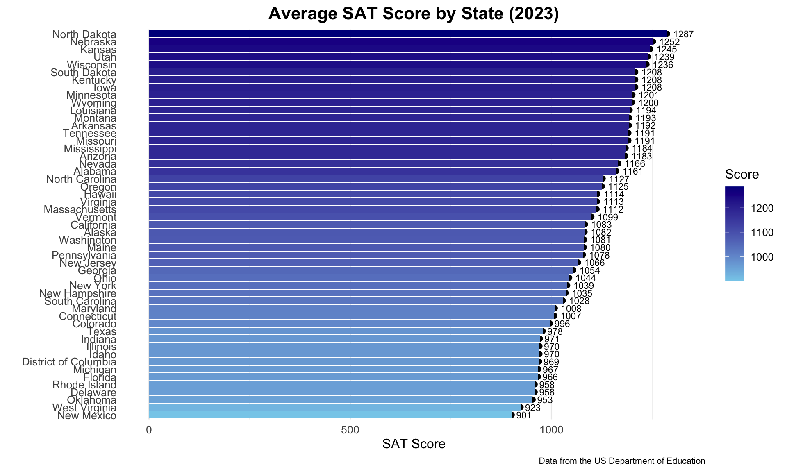
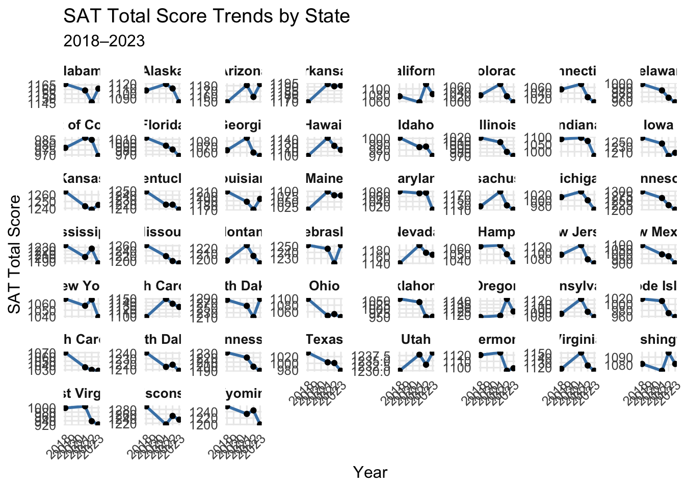
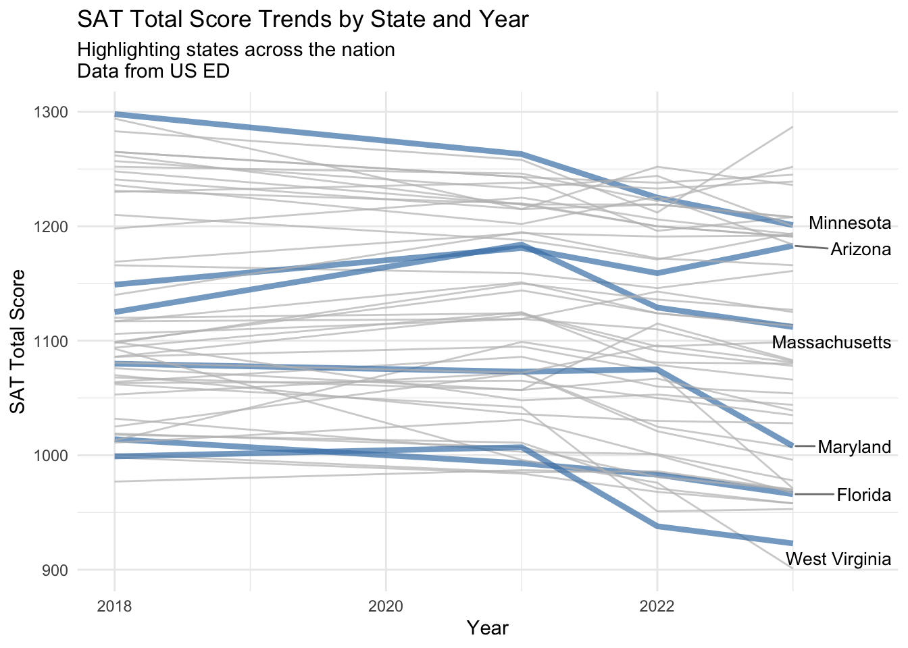

# Filter for 2023 data and perform ANOVAsat_2023 <- sat_long |>filter(Year ==2023) |>filter(State !="United States")sat_2023_total <- sat_2023 |>filter(Section =="Total")anova <-aov(Score ~ State, data = sat_2023_total)summary(anova)
Df Sum Sq Mean Sq
State 50 536992 10740
# Create a boxplot for SAT scores by sectionsat_2023_total |>ggplot(aes(x =reorder(State, Score), y = Score)) +geom_point(size =2) +geom_text(aes(label =round(Score)), hjust =-0.3, size =3) +coord_flip() +labs(title ="Average SAT Score by State (2023)",x ="",y ="SAT Score",caption ="Data from the US Department of Education" ) +theme_minimal(base_size =12) +theme(axis.text.y =element_text(size =10),axis.text.x =element_text(size =10),plot.title =element_text(hjust =0.5, size =16, face ="bold"),plot.caption =element_text(hjust =1, size =8),panel.grid.major.y =element_blank(),axis.ticks =element_blank() ) +expand_limits(y =max(sat_2023_total$Score) +30) +geom_col(aes(fill = Score)) +scale_fill_gradient(low ="skyblue", high ="darkblue")

# Facet wrap by state, year, and sectionsat_long_total <- sat_long |>filter(State !="United States"& Section =="Total")sat_long_total |>ggplot(aes(x = Year, y = Score, group = State)) +geom_line(color ="steelblue", linewidth =1) +geom_point(color ="black", size =1.5) +facet_wrap(~ State, scales ="free_y") +labs(title ="SAT Total Score Trends by State",subtitle ="2018–2023",x ="Year",y ="SAT Total Score" ) +theme_minimal(base_size =12) +theme(strip.text =element_text(size =10, face ="bold"),axis.text.x =element_text(angle =45, hjust =1),panel.grid.minor =element_blank() )

# Overlapping the lines to highlight discrepancieslibrary(ggrepel)highlighted_states <-c("Minnesota","Arizona","West Virginia","Maryland","Massachusetts","Florida")label_data <- sat_long_total |>filter(State %in% highlighted_states) |>group_by(State) |>filter(Year ==max(Year))sat_long_total |>mutate(highlight = State %in% highlighted_states) |>ggplot(aes(x = Year, y = Score, group = State)) +geom_line(aes(color = highlight, linewidth = highlight), alpha =0.7) +scale_color_manual(values =c("gray", "steelblue")) +scale_linewidth_manual(values =c(0.5, 1.5)) +geom_text_repel(data = label_data,aes(x = Year, y = Score, label = State),size =3.5,nudge_x =0.5,segment.color ="grey50",direction ="y",hjust =0,inherit.aes =FALSE) +labs(title ="SAT Total Score Trends by State and Year",subtitle ="Highlighting states across the nation \nData from US ED",x ="Year",y ="SAT Total Score" ) +theme_minimal() +theme(legend.position ="none")

# Read data from ED on grants by stategrants_raw <-read_xlsx("../data_raw/25stbystate.xlsx",sheet ="FY 2023-2025 State by State",skip =65, col_names = F)
# Summary statistics for merged datasummary(merged_data)
State Score program year
Length:102 Min. : 901.0 Length:102 Length:102
Class :character 1st Qu.: 998.8 Class :character Class :character
Mode :character Median :1083.0 Mode :character Mode :character
Mean :1094.0
3rd Qu.:1191.8
Max. :1287.0
amount
Min. :4.281e+07
1st Qu.:1.604e+08
Median :3.194e+08
Mean :5.873e+08
3rd Qu.:7.119e+08
Max. :4.788e+09
ggplot(merged_data, aes(x = amount, y = Score)) +geom_point() +geom_smooth(method ="lm", se =FALSE) +labs(title ="SAT Scores vs. Grant Amounts by State (2023)",x ="Grant Amount",y ="SAT Score" ) +scale_x_continuous(labels = scales::dollar_format()) +theme_minimal(base_size =12) +theme(plot.title =element_text(hjust =0.5, size =16, face ="bold"),axis.text.x =element_text(size =10),axis.text.y =element_text(size =10) )